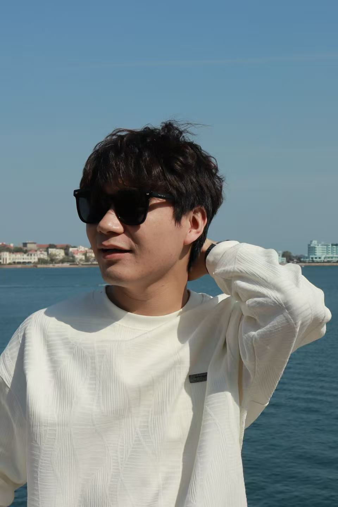
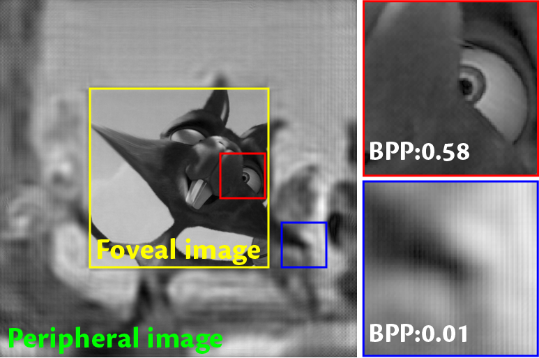

|
I am a researcher in Huawei CBG, where I focus on developing an intelligent HarmonyOS IDE using LLM. I obtained Ph.D. degree from Department of Electronic Engineering, Shanghai Jiao Tong University (SJTU) in 2025, supervised by Prof. Yuye Ling. I primarily work on co-designing optical systems and algorithms towards next-generation VR & AR displays. Before that, I received the B.Eng. degree in Information Engineering from South China University of Technology (SCUT) in 2020. Currently, my research interests lie in LLM for Software Engineering, particularly GUI Agent and Trustworthy AI in Software Systems. CV / Email / Google Scholar / GitHub / Linkedin |
 |
| Selected Publications |

|
Zhenxing Dong, Yuye Ling, Yan Li, Yikai Su Science Advances, 2025 [Technical Paper] [Code] [Project Page] |

|
Zhenxing Dong*, Jidong Jia*, Yan Li, Yuye Ling * indicates equal contribution IEEE Conference on Virtual Reality and 3D User Interfaces (VR), 2024 [Technical Paper] [Code] [Project Page] |
|  |
Zhenxing Dong, Yuye Ling, Chao Xu, Yan Li, Yikai Su Elsevier Displays (Displays), 2023 [Technical Paper] |

|
Yuye Ling*, Zhenxing Dong*, Xueshen Li, Yu Gan, Yikai Su * indicates equal contribution Optics Letters (OL), 2023 (Top downloads in Mar. & Apr. 2023) [Technical Paper] |
|
Zhenxing Dong, Chao Xu, Yuye Ling, Yan Li, Yikai Su Optics Letters (OL), 2023 [Technical Paper] [Supplement] [Code] [Project Page] |
|
Thanks to Jon Barron for his website template. |